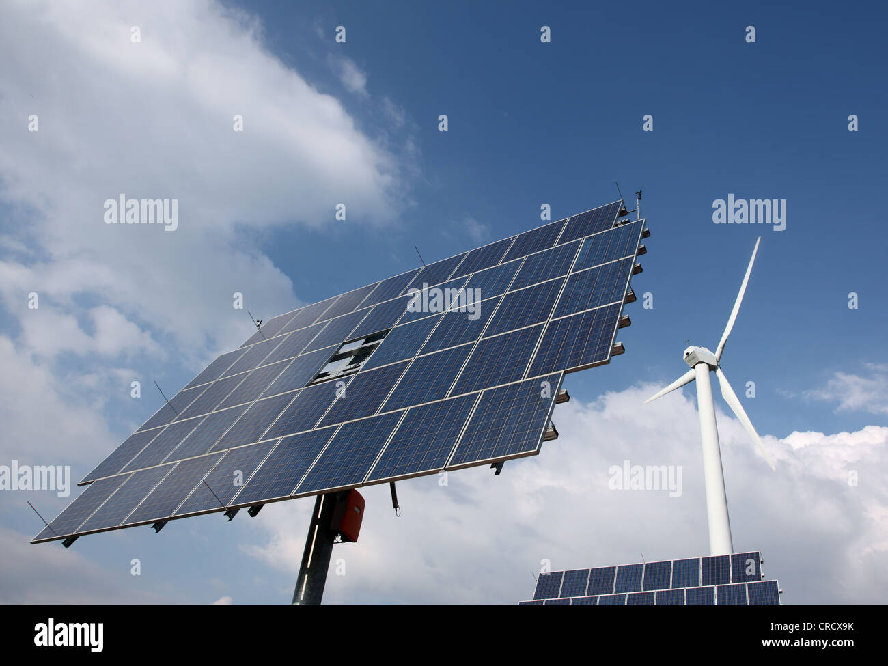

1. Roboter im Alltag
Roboter sind schon lange nicht mehr nur langweilige Blechkisten: Sie erforschen fremde Planeten, spielen Schach, Fußball oder Tischtennis, helfen uns Menschen im Haushalt oder trampen sogar durch die Welt. In unserem Extra tauchen wir ein in die abenteuerliche Welt der Roboter. Schau dir dieses Video an, um mehr zu erfahren!
2. Erneuerbare Energien
Windräder und Solarpanels sind Beispiele für Technologien, die saubere Energie erzeugen.
3. Programmieren und Computer
Computer und Programmierung treiben die Welt an! Hier ist ein Bild, das zeigt, wie Programmieren aussieht.